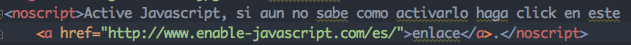
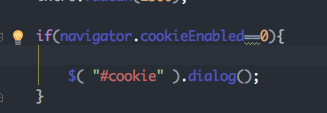
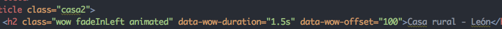

JavaScript activo
Para saber si tenemos o no activado javascript en nuesto navegador se ha usado la etiqueta noscript como podemos apreciar en la imagen

Cuando el se detecta que el javascript esta desconectado nos aparece esta imagen de error junto a un enlace para poder saber como activarlo.
Cookie activo
Para conocer si tenemos las cookies activas o no necesitamos crear usar javascript. En este caso hemos usado la siguiente condicion para que sea posible.

Si las cookies estan desactivadas aparece un dialogo indicando que es recomendable para el buen uso de la pagina el uso de cookie. Para mostrar el mensaje he utilizado el dialogo usando jquery ui.
Efecto inicial
Para el efecto inicial he usado un efecto creado con JQuery.

El efecto se basa en el paso de imagenes, la imagen casa hace 1 segundo espera y tras esto se desplaza hacia arriba hasta que desaparece durante 2 segundos
El tractor hace una espera de 2s y tras esto se desplaza hacia la izquierda y tras se oculta el contenido y luego se muestra poco a poco.
Efecto nombres
Para crear los efectos del titulo de las casas he usado una libreria de CSS que se llama animate.css.

El funcionamiento es simple iniciamos wow y luedo elegimos un efecto del extenso catálogo y colocamos la duración del efecto. Esta libreria tambien hace uso de Javascript ya que requiere del archivo WoW.js para que cuando el titulo sea visible se active el efecto.